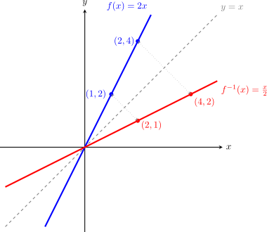

6. Composició de funcions i funció inversa
La composició és una nova operació que permet construir funcions complexes a partir de funcions més senzilles. A diferència de les operacions aritmètiques, aquí no sumem ni multipliquem valors, sinó que apliquem una funció sobre el resultat d'una altra.
6.1. El concepte de cadena
Podem imaginar la composició com una cadena de muntatge: el valor \(x\) entra en la primera funció, aquesta genera un resultat, i aquest resultat s'introdueix immediatament com a dada d'entrada en la segona funció. Esquemàticament, és així, si \(f(x)\) la volem compondre amb \(g(x)\):
Exemple Composem \(f(x)=x^2\) amb \(g(x)=x-1\) i mirem la imatge per a \(x=2\):
\[2 \xrightarrow{x^2} 4 \xrightarrow{x-1} 3\]Com podem observar, apliquem les funcions "en cadena", o sigui una darrere de l'altra i prenent el resultat d'una com a entrada de l'altra.
Notació matemàtica:
Matemàticament utilitzem la notació \((g \circ f)(x)\) per indicar a la composició i es llegeix com "f composta amb g" (sempre de dreta a esquerra, ja que \(f\) és la primera a actuar):
6.2. Propietat: la no commutativitat
És important tenir en compte que l'ordre de l'operació canvia el resultat. O sigui, la composició no és commutativa. En general:
Exemple:
Siguin \(f(x) = x^2\) i \(g(x) = x + 5\).
- \((g \circ f)(x) = g(f(x)) = g(x^2) = \mathbf{x^2 + 5}\)
- \((f \circ g)(x) = f(g(x)) = f(x+5) = \mathbf{(x+5)^2}=\mathbf{x^2+10x+25}\)
Com es pot veure, els resultats són expressions totalment diferents.
6.3. Funció Inversa o Recíproca
Diem que una funció \(f^{-1}\) és la inversa de \(f\) si és capaç de "desfer" el camí fet per la primera. Si una funció porta el valor \(A\) al valor \(B\), la inversa portarà el valor \(B\) de tornada al valor \(A\).
6.4. Definició i Simetria
Dues funcions són inverses si en compondre-les obtenim la funció identitat \(I(x) = x\). En aquest cas particular, la composició sí que és commutativa:
Exemple:
Considerem \(f(x)=2x\) i \(g(x)=\displaystyle\frac{x}{2}\)
\[3 \xrightarrow{2x} 6 \xrightarrow{\frac{x}{2}} 3\]\[x \xrightarrow{2x} 2x \xrightarrow{\frac{x}{2}} x\]Com podem observar, una funció desfà el que fa l'altra
Propietat gràfica: Les gràfiques de \(f\) i \(f^{-1}\) són sempre simètriques respecte a la recta \(y = x\) (la bisectriu del primer i tercer quadrant).
Exemple:
Si mirem les gràfiques de \(f(x)=2x\) i \(g(x)=\displaystyle\frac{x}{2}\) respecte de \(y=x\):

6.4. Mètode per trobar la funció inversa
Per calcular l'expressió de \(f^{-1}(x)\) a partir de \(f(x)\), seguim aquests passos:
- Canvi de notació: Escrivim \(y\) en lloc de \(f(x)\).
- Intercanvi de variables: Allà on hi ha una \(x\) posem una \(y\), i on hi ha una \(y\) posem una \(x\).
- Aïllar la \(y\) i la nova expressió obtinguda serà \(f^{-1}(x)\).
Exemple de càlcul:
Trobem la inversa de \(\displaystyle f(x) = \frac{3x - 5}{2}\):
- \(y = \displaystyle\frac{3x - 5}{2}\)
- \(x = \displaystyle\frac{3y - 5}{2}\)
- Aïllem la \(y\):
- \(2x = 3y - 5\)
- \(2x + 5 = 3y\)
- \(y = \displaystyle\frac{2x + 5}{3} \implies \mathbf{f^{-1}(x) = \frac{2x + 5}{3}}\)